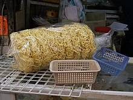
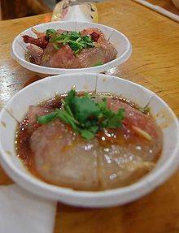
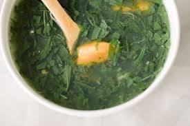

南投意麵
- 意麵（中國大陸、香港稱為伊麵，又稱伊府麵），是一種油炸的蛋麵，流行於中國大陸、香港、台灣，為粵菜經典主食，中國著名麵食之一，因在民間廣泛的流傳與改良，傳至世界各地。由於意麵與現代的泡麵有相似之處，至今仍有廠家將自家速食麵產品命名為「意麵」。
- 相傳明鄭時期天興縣大龜肉庄墾殖的福州籍伙房兵引入，故多稱鹽水意麵或福州意麵。明代氣候變遷，台灣氣候也較為寒冷而能種植小麥，荷西時期就有記載大員人賣1200袋小麥給熱蘭遮城缺糧的荷蘭人，所以台灣自產小麥製麵，在當時的條件下是可能的。據鹽水區公所說法，名稱乃「由於在擀麵時必須出力，隨之發出『噫』的聲音，因此而稱為意麵」。另有從台語「幼麵」轉音而成的說法；由於麵條外觀比陽春麵還單薄，因此以「幼（細小）麵」稱之。也稱為「薏麵」，早期多半由鴨蛋製作，惟品質較不穩定，故轉添加雞蛋。日治時期常做為宴席菜，很少人能食用。替代進口後期，台灣已種植小麥面積2萬5千公頃，意麵亦進入平民化餐飲。

彰化肉圓
肉圓（英語：Bahwan；台灣話：Bah-oân）是一種臺灣的特色街頭小吃，相傳彰化縣北斗鎮是肉圓的發源地，約誕生於19世紀末。其名稱源自於其外觀，一般為直徑六至八公分左右的半透明扁圓形，除了最常見的圓形造型之外，亦有三角形的北斗肉圓，但目前不若圓形肉圓普及。肉圓外皮是以地瓜粉、太白粉或在來米粉、樹薯粉等材料作成的半透明皮，其內餡以豬肉和豬絞肉為主，其他配料依據店家不同會有筍子、香菇、雞蛋、干貝或栗子等食材。烹調作法大略以彰化做為分界，彰化以北多用油炸油泡、彰化以南多為炊蒸。

台中麻薏
台中人吃麻薏的文化，其實很多層面跟經濟發展也是息息相關的。麻薏是黃麻的嫩芽，而黃麻則是主要集中栽種在台中南屯的經濟作物，可以用來做麻繩、麻布等，而嫩葉則可用來食用。
